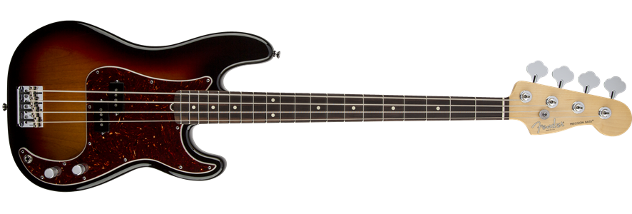

American Standard Precision
The American Standard Precision Bass is the same best-selling and solidly powerful instrument it has always been, and now it's upgraded with a seismic Fender Custom Shop '60s Precision Bass split single-coil pickup and a striking new Jade Pearl Metallic finish option. It's the latest incarnation of the indestructible workhorse instrument that revolutionized popular music, stronger and more indispensable than ever.
The American Standard has a high-mass vintage bridge, Fender Custom Shop '60s Precision Bass split single-coil pickup, thinner finish undercoat that lets the body breathe and improves resonance, improved Fender tuners that are 30 percent lighter while keeping the classic look, richer and deeper neck tint for a more elegant appearance, great-looking gloss maple fingerboard, satin neck back for smooth playability and Fender Tolex case.